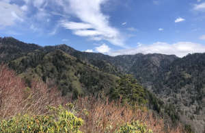

Your one stop shop for backpacking and hiking locations.
Maps
Skyline Trail LoopSky Pond via Glacier Gorge TrailUpper Yosemite Falls Trail

Alum Cave Trail to Mount LeConteSnow Lake TrailLake Blanche TrailColchuck Lake via Stuart Lake and Colchuck Lake TrailLost Lake via Hessie Trail